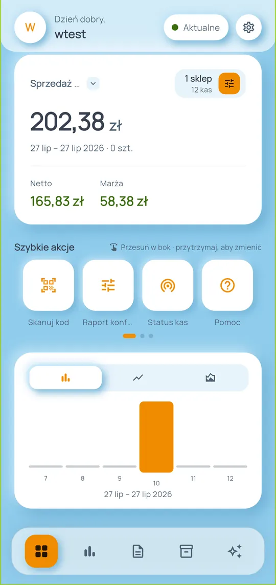
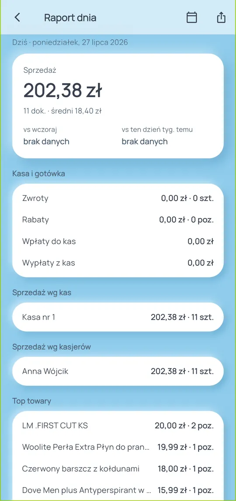
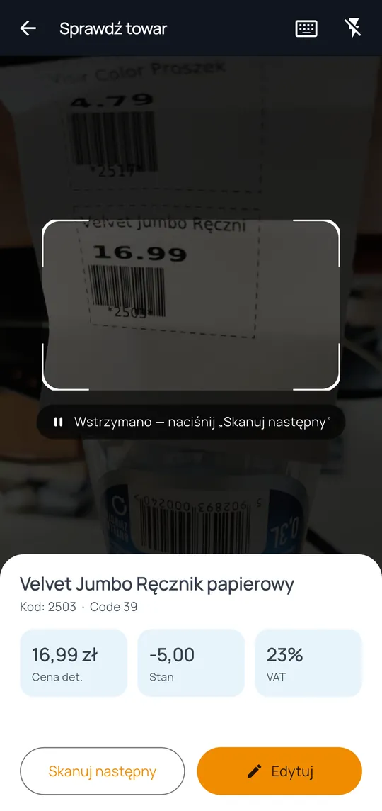
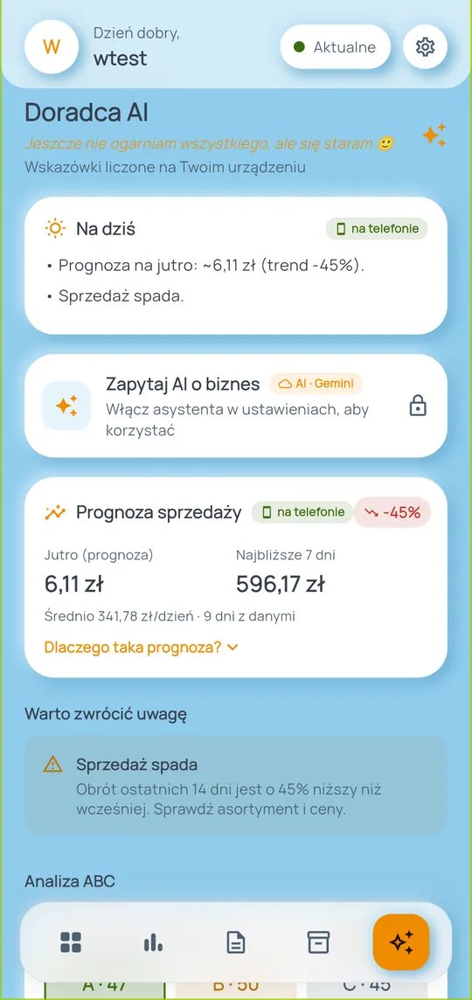
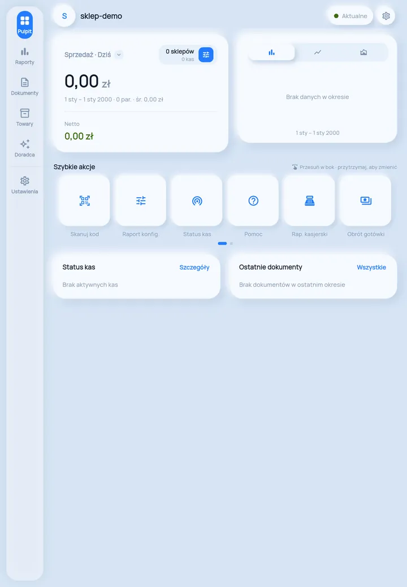

Twój sklep w telefonie.Bez włączania komputera.
Sprzedaż, raporty, dokumenty i towary z Twojego konta NoviCloud — na telefonie i tablecie. Wieczorem aplikacja sama przyśle podsumowanie dnia.
Aplikacja bezpłatna dla klientów NoviCloud.

Wszystko, po co dziś logujesz się do komputera
Aplikacja pokazuje dane z Twojego NoviCloud — te same liczby, tylko szybciej dostępne i policzone pod telefon.
Pulpit i raporty
- Obrót za dziś, tydzień, miesiąc lub własny zakres dat
- Raport sprzedaży wg towaru, kasy, kasjera i stawki VAT
- Raport kasjerski ze zmianami, utargiem i formami płatności
- Obrót gotówki, zwroty, rabaty, stany magazynowe
- Zakupy i dostawcy: terminy płatności faktur z przypomnieniami, przyjęcia PZ bez faktury
- Kontrola cen: towary sprzedane po innej cenie niż w katalogu
Towary i skaner
- Cena i stan towaru zaraz po zeskanowaniu kodu
- Dodawanie i edycja towarów (przy subskrypcji „API W”)
- Etykiety cenowe gotowe do wydruku
- Spis z natury skanerem, eksport CSV / XLSX / PDF
Dokumenty i klienci
- Paragony, faktury i korekty z pozycjami i rozbiciem VAT
- Szukanie po numerze, typie albo kwocie
- Eksport kopii dokumentu do PDF
- Karty lojalnościowe klientów (wymaga modułu PC-Loyalty)
Ekrany, które oszczędzają najwięcej czasu
Wszystkie zrzuty pochodzą z prawdziwej aplikacji na koncie demonstracyjnym.

Raport dnia
Całe „co się dziś stało” w jednym miejscu — bez składania liczb z czterech ekranów. Liczy się z danych już pobranych na telefon, więc otworzysz go nawet bez zasięgu.
- Sprzedaż i średni paragon z porównaniem do wczoraj oraz do tego samego dnia tygodnia
- Utarg wg kas i kasjerów, zwroty, rabaty, wpłaty i wypłaty gotówki
- Jeden przycisk tworzy PDF do wysłania wspólnikowi lub księgowej

Skaner przy półce
Klient pyta o cenę, a Ty nie musisz wracać do kasy.
- Po zeskanowaniu kodu widzisz nazwę, cenę, stan i stawkę VAT
- Tryb ciągły — kolejne towary sprawdzasz jednym ruchem
- Dla produktów spożywczych podejrzysz skład i alergeny

Kontrola zmian
Widzisz, kto pracował, ile utargu przyjął i co się działo z gotówką.
- Zmiany otwarte i zamknięte, czas pracy, liczba paragonów
- Rozbicie utargu na formy płatności, storna i anulowane
- Wpłaty i wypłaty gotówki z kas w wybranym okresie

Doradca liczony na telefonie
Podpowiedzi powstają na urządzeniu — bez opłat i bez wysyłania danych na zewnątrz.
- Prognoza sprzedaży, alerty i sugestie zamówień z zapasem bezpieczeństwa
- Analiza ABC: które towary robią 80% obrotu
- Każda liczba ma rozwijane „Dlaczego?” z pełnym wyliczeniem
- Opcjonalny czat wymaga własnego, darmowego klucza Google Gemini

Na tablecie inny układ
Ten sam program ułożony pod większy ekran — i robi to sam, bez żadnego przełącznika. Zakładki przenoszą się z dolnego paska do panelu po lewej i nie znikają, gdy wejdziesz w raport albo w Ustawienia.
- Panel boczny w obu orientacjach — obrót tabletu nie przebudowuje aplikacji
- W poziomie lista i podgląd obok siebie: towary, dokumenty, filtry raportu przy wynikach
- Pulpit w dwóch kolumnach, wszystkie kafelki szybkich akcji w jednym rzędzie i panel „Na żywo” ze stanem kas
- iPad w podzielonym ekranie oraz telefon działają jak dotąd
Każdy z tych ekranów opisuje instrukcja — 19 rozdziałów i 62 zrzuty z prawdziwej aplikacji.
Otwórz instrukcjęTwoje dane zostają u Ciebie
Aplikacja nie ma własnego serwera. Łączy się wprost z Twoim NoviCloud, a to, co pobierze, trzyma w telefonie.
Co dokładnie wychodzi z telefonu?
Poza NoviCloud aplikacja pyta tylko dwie usługi i tylko wtedy, gdy sam o to poprosisz: Open Food Facts (wysyłany jest sam kod kreskowy — stąd skład i alergeny) oraz prognozę pogody dla podanej miejscowości, jeśli włączysz codzienne podpowiedzi Doradcy. Do tych usług nigdy nie trafiają dane Twojej sprzedaży ani klientów.
Jeśli sam włączysz czat AI (własny klucz Gemini), do modelu idą wyłącznie liczby i nazwy towarów — nigdy dane klientów, kontrahentów ani nazwiska kasjerów.
Bez reklam i śledzenia
Zero reklam, zero analityki, brak identyfikatorów reklamowych i brak dostępu do lokalizacji urządzenia.
Hasła tylko na urządzeniu
Dane logowania trzymane są w bezpiecznym magazynie systemu i wysyłane wyłącznie do NoviCloud po HTTPS.
AI dobrowolne
Chmurowy czat włączasz sam, własnym kluczem. Bez niego Doradca liczy wszystko na urządzeniu.
Pełną listę pobieranych danych i uprawnień opisuje polityka prywatności.
Polityka prywatnościTrzy kroki do pierwszego raportu
Potrzebujesz konta NoviCloud z modułem API. Hasło API to osobne hasło do połączeń — nie to, którym logujesz się w przeglądarce.
Włącz moduł API
W NoviCloud: Administracja → NoviCloud → Subskrypcja. Jeśli moduł API jest wyłączony, aktywuj go.
Ustaw hasło API
Administracja → Dane firmy → Baza danych → „Ustal hasło dostępu”. To hasło posłuży wyłącznie aplikacji.
Zaloguj się w aplikacji
Podaj nazwę swojej bazy danych i hasło API. Pierwsza synchronizacja pobierze towary, dokumenty i kasy.
Wymagania
- Konto NoviCloud z aktywnym modułem API (REST)
- Subskrypcja „API W” — jeśli chcesz dodawać i edytować towary lub zapisywać zmiany kart lojalnościowych
- Moduł PC-Loyalty — dla kart lojalnościowych
- Android 7.0+ lub iOS 13+; kamera w telefonie dla skanera
Nie masz pewności, co obejmuje Twoje konto? Napisz na next@novitus.pl albo zadzwoń na helpdesk NoviCloud i kas Next One: 22 113 95 69.